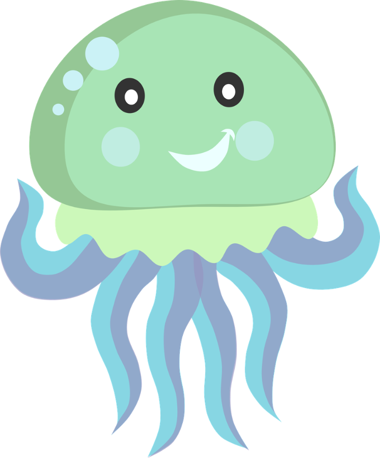
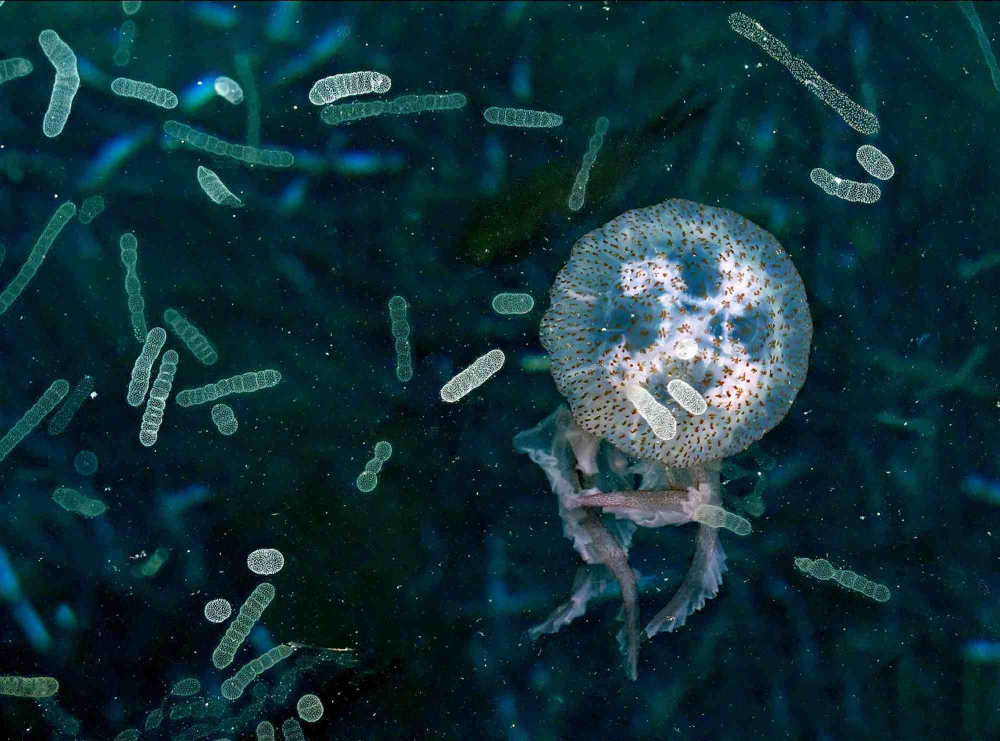

<html>

<head>

  <title>
    The Life Cycle of the Medusa
  </title>

  <link rel="stylesheet" href="style.css" />
  <link href="https://fonts.googleapis.com/css?family=Jomolhari&display=swap" rel="stylesheet">
  <script type='text/javascript' src='https://ajax.googleapis.com/ajax/libs/jquery/1.4.2/jquery.min.js'></script>
  <script src="script3.js"></script>
  <script type='text/javascript'>
    (function() {
      $(document).ready(changePage);

      function changePage() {
        $.ajaxSetup({ cache: false }
        );
        if (sessionStorage.getItem("Medusa") == "visited p.5") {
          $('head').html('<title>Bloop Bloop Review</title><link rel="stylesheet" href="style2.css" /><link href="https://fonts.googleapis.com/css?family=Caveat&display=swap" rel="stylesheet">');

          $('body').html('<center></img><h2> Jellyfish are the Best Animals in the World </h2></center>' +

            '</img>' +

            '<div class="div2"><p1>' +
            "Jellyfish are such lovely creatures. The way they float in the ocean so elegantly" +
            " is so mezmerizing to look at. I would totally try to swim with them if they" +
            " weren't so dangerous. I would hate to get electrocuted while swimming with them," +
            " but then again, wouldn't it be an honor to not only die among jellyfish, but" +
            " also be killed by such an elegant speciment." +
            "<br><br>" +
            " Honestly, just the fact that jellyfish are such beautiful animals is enough" +
            " to consider them the beast animals in the world. I mean, name another animal" +
            " that looks flawless no matter what. Exactly, there is no other. Yeah, there" +
            " are some animals that are cute like dogs and cats, but not all of them are born" +
            " that way. I've seen some very ugly pups (sorry Karen, but yo dawg busted)." +
            "</p1></div>" +
            '<div class="flex-container">' +
            '<button class="button2"> Back </button></div>'
          );

        } else {
          $('head').html('<title>The Life Cycle of the Medusa</title><link rel="stylesheet" href="style.css" /><link href="https://fonts.googleapis.com/css?family=Jomolhari&display=swap" rel="stylesheet">');
          $('body').html('<h2> Eggs and Sperm </h2>' +

            '<div class="div3"><p2> Jellyfish can reproduce sexually and asexually. However, jellies' +
            " reproduce asexually when they are in the Polyp phase and sexually once it" +
            " they are in the Medusa phase. On this page, we will focus on the sexual reproduction." +

            '<div> </img></div>' +

            " Male and female jellyfish possess reproductive organs called" +
            " gonads. When jellyfish are ready to mate, the male releases sperm through" +
            " the mouth opening located on the underside of its bell. In some jellyfish" +
            ' species, eggs are attached to "brood pouches" on the upper part of the' +
            " female's arms, surrounding the mouth; the eggs are fertilized when she swims" +
            " through the male's sperm. In other species, the female harbors the eggs" +
            " inside her mouth, and the male's sperm swim into her stomach; the fertilized" +
            " eggs later leave the stomach and attach themselves to the female's arms.</p2>" +

            '</div><div class="div4"> <a href="Page3.html"> <button> Planula Larvae </button></a></div>'
          );


        }
      }


    })();
  </script>
</head>

<body>
</body>


<!-- <html>


 <head>

   <title>
     The Life Cycle of the Medusa
     </title>

 <link rel="stylesheet" href="style.css" />

 <link href="https://fonts.googleapis.com/css?family=Jomolhari&display=swap" rel="stylesheet">

 </head>


 <body>
   <h2> Eggs and Sperm </h2>

   <div class="div3">
     <p2>
       Jellyfish can reproduce sexually and asexually. However, jellies
       reproduce asexually when they are in the Polyp phase and sexually once it
       they are in the Medusa phase. On this page will focus on the sexual
       reproduction.
       <div> </img> </div>
       Male an female jellyfish possess reproductive organs called
   gonads. When jellyfish are ready to mate, the male releases sperm through
   the mouth opening located on the underside of its bell. In some jellyfish
       species, eggs are attached to "brood pouches" on the upper part of the
       female's arms, surrounding the mouth; the eggs are fertilized when she swims
       through the male's sperm. In other species, the female harbors the eggs
       inside her mouth, and the male's sperm swim into her stomach; the fertilized
       eggs later leave the stomach and attach themselves to the female's arms.
       </p2>

     </div>


  <div class="div4"> <a href="Page3.html"> <button> Planula Larvae </button> </a> </div>

   </body> -->

</html>
